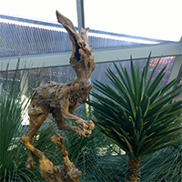
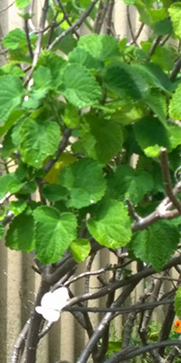
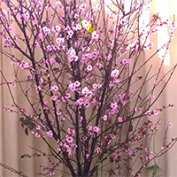
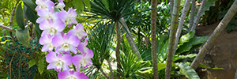
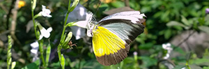

Welcome To Our World Of Plants
Our aim here is to share with the world what we have learned in the garden.
Whether you are looking for the best soil for your plants, or tips for creating arrangements, we hope this website can help.
Feel free to get in touch with questions or feedback, we would love to hear from you!
We also have our own local artist who creates terracota pots with some amazing designs, which are sold on our online store.
They would make for a nice house warming gift!
You can put what you have learned from our website to the test!
Article About Plants
This article explores the world of succulents, cacti, and tropical plants.
It will go through how you can propogate your succulents, and what kind of soil your plant might prefer.
It will also discuss what kind of environment a particular type of plant best grows in.
If you have any further questions, feel free to contact us.
Video About Arrangements
Arrangements are so much fun to create, and can become a pleasant gift for someone.
There are many resources online that have their own take on designing an arrangement,
but here we show you how we like to do it.
We would love to see photos of your personalised arrangements!

Video About Soil
There are quite a few different types of soil.
Some are quite dense, while some are quite loose like sand (which is good for plants that do not like a lot of water).
We have made a video with an in depth exploration of soils and what particular plants prefer.
We hope that we have been able to help you in your gardening adventure!
